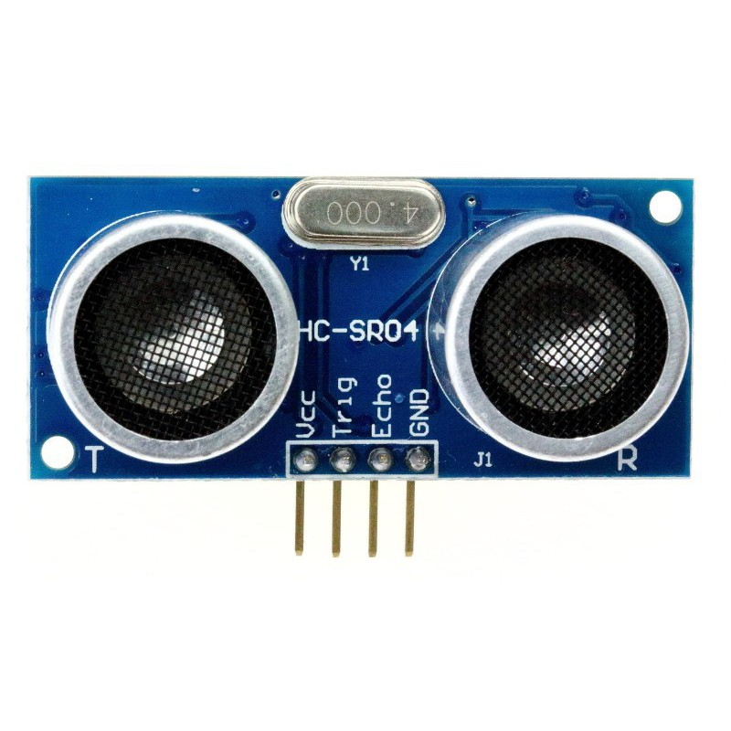
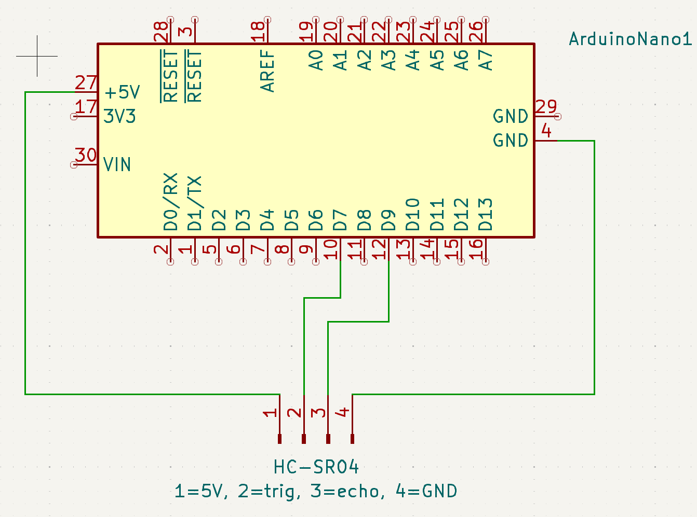
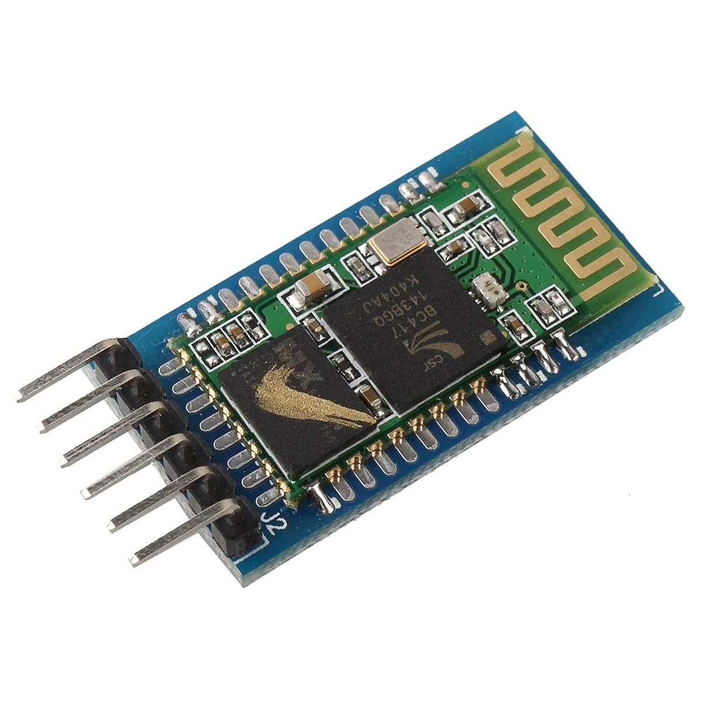
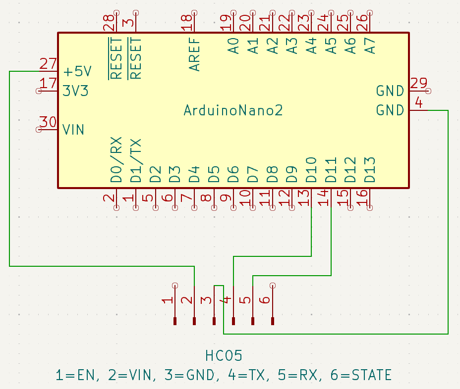

Improving the otto robot
Introduction
In this section, you will learn how to improve the otto robot.
Ultrasound detection
The HC-SR04 is a unidirectional sensor that uses ultrasound to detect objects and calculate the distance between them.
Electronic
 
Programming
So this is a basic code for controlling an ultrason sensor. You need to configure the trig pin as an ouput and the echo pin as an inpout. Next, you need to send the ultrason signal by sending a pulse on the trig pin. Finally, you can read the time after which the signal returns, and calculating the distance bewteen the object and the sensor. The sensor can detected a maximum distance of 3 meters.
#define trigPin 9 // Declaration of global variables
#define echoPin 7
long duree; // Declaration of global variables
int distance;
void setup() {
Serial.begin(9600); // Serial monitor communication initialization
pinMode(trigPin, OUTPUT); // Configuration of this pin as an output
pinMode(echoPin, INPUT); // Configuration of this pin as an input
}
void loop() {
digitalWrite(trigPin, LOW); // To make sure that it is at low state
delayMicroseconds(5);
digitalWrite(trigPin, HIGH); // Send of the ultrason signal
delayMicroseconds(10);
digitalWrite(trigPin, LOW);
duree = pulseIn(echoPin, HIGH); // Reading the time after which the signal sent is received
distance = duree * 0.034 / 2; // Calculating of the distance detected
Serial.print("distance ="); // Printing results
Serial.println(distance);
delay(1000); // Waiting 1 second before restarting
}Bluetooth
The HC05 is an arduino mobile, enabling us to communicate with your phone using an application.
Electronic
 
Programming
This program uses the SoftwareSerial library to communicate with an HC05 Bluetooth module, defining TX and RX pins as 10 and 11. In the setup, it initializes serial communication with the monitor and the Bluetooth module. In the loop, it checks for incoming Bluetooth data, printing received characters to the serial monitor or "Not connected" if no data is available.
#include <SoftwareSerial.h> // This is the library needed to use HC05
#define TXPin 10 // Declaration of global variables
#define RXPin 11
SoftwareSerial BluetoothSerial(RXPin, TXPin); // Declaration of a SoftwareSerial.h library object
void setup() {
Serial.begin(9600); // Serial monitor communication initialization
BluetoothSerial.begin(9600); // Bluetooth communication initialization
}
void loop() {
if (BluetoothSerial.available()) { // If the Bluetooth is conneced to another device, BluetoothSerial.available() return true
char var = BluetoothSerial.read(); // BluetoothSerial.read() allows us to read the char received
Serial.println(var); // Printing of the received value
}
else{
Serial.println("Not connected");
}
}Communication
I recommand using the "Arduino Bluetooth" application, developed by AKI32DEV. When the arduino is supplied, start by connecting via Bluetooth using your phone's basic settings. Then, the HC05 module will appear in the application. You can then communicate by sending characters. You can also configure commands.
Other Ideas
You can find lots of ideas on the Ottodiy website. I also give you the final code of my otto robot.